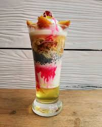

Delicous!!!
Falooda
Servings: 2-3 glasses.Preparation Time: 20 minutes.Cooking Time: 10 minutes (if making falooda sev at home)
Ingredients
- 2 cups chilled milk (boiled and cooled).
- 2–3 tablespoons sugar (adjust to taste)
- 2–3 tablespoons basil seeds (sabja/tukmaria)
- ½ cup falooda sev (or thin vermicelli)
- 3–4 tablespoons rose syrup (e.g., Rooh Afza or Dabur)
- 2–3 scoops vanilla or kulfi ice cream.
- Chopped nuts (optional – almonds, pistachios).
- Cherries or tutti frutti for garnish (optional).
Instructions:
-
Soak Sabja Seeds:
Wash and soak sabja (basil) seeds in ½ cup water for 15–20 minutes.
They will swell and become gelatinous. Drain excess water and set aside.
-
Prepare Falooda Sev:
If using ready-made sev:
- Boil water and cook sev according to package instructions (usually 3–5 minutes).
- Drain and rinse with cold water. Set aside.
If using regular vermicelli:
- Break into small pieces, boil until soft, then rinse in cold water.
-
Sweeten the Milk:
In a bowl, mix sugar with chilled milk.
Stir until completely dissolved. Keep milk cold in the refrigerator.
-
Assemble the Falooda:
Use tall glasses for best presentation.
- Add 1 tablespoon rose syrup at the bottom of the glass.
- Add 1–2 tablespoons soaked sabja seeds.
- Add 2–3 tablespoons falooda sev.
- Pour sweetened chilled milk over the layers until the glass is ¾ full.
- Add a scoop of ice cream on top.
- Drizzle a little more rose syrup.
- Garnish with chopped nuts, cherries, or tutti frutti.
